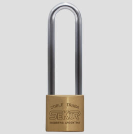
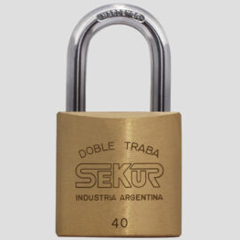
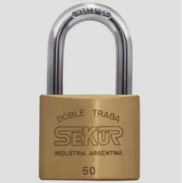
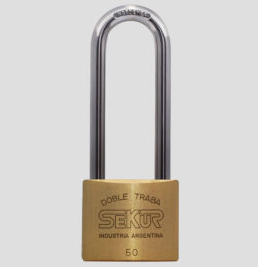

El Ferretongo

Candado Sekur 26
Doble traba a bolillas de acero inoxidable. Arco templado. Cuerpo de 26 mm

Candado Sekur 31
Doble traba a bolillas de acero inoxidable. Arco templado. Cuerpo de 31 mm

Candado Sekur 40 Combinación
Fabricado en bronce macizo con arco templado. Cuerpo de 40 mm , combinación de 4 números

Candado Sekur 40
Fabricado en bronce macizo con arco templado. 40 mm de ancho, doble traba.

Candado Sekur 50
Fabricado en bronce macizo con arco templado. 50 mm de ancho, doble traba.

Candado Sekur 50 arco mediano
Fabricado en bronce macizo con arco templado. 50 mm de ancho, doble traba.

Cerradura 400
Pasador rectangular. Pestillo entero. 4 combinaciones. Medidas: Caja 126 x 63 mm - Frente 185 x 20 mm

Cerradura 600
Pasador doble perno. Pestillo entero. 6 combinaciones. Medidas: Caja 148 x 72 mm - Frente 240 x 26 mm

Cerradura 601
Pasador doble perno. Pestillo partido. 6 combinaciones. Medidas: Caja 148 x 72 mm - Frente 240 x 26 mm